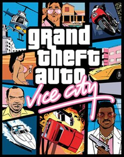
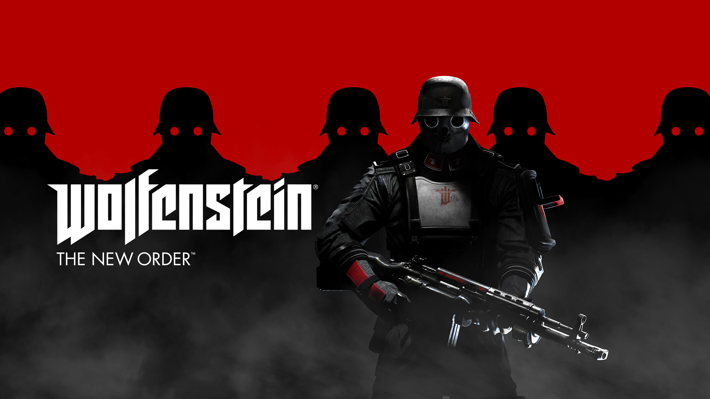
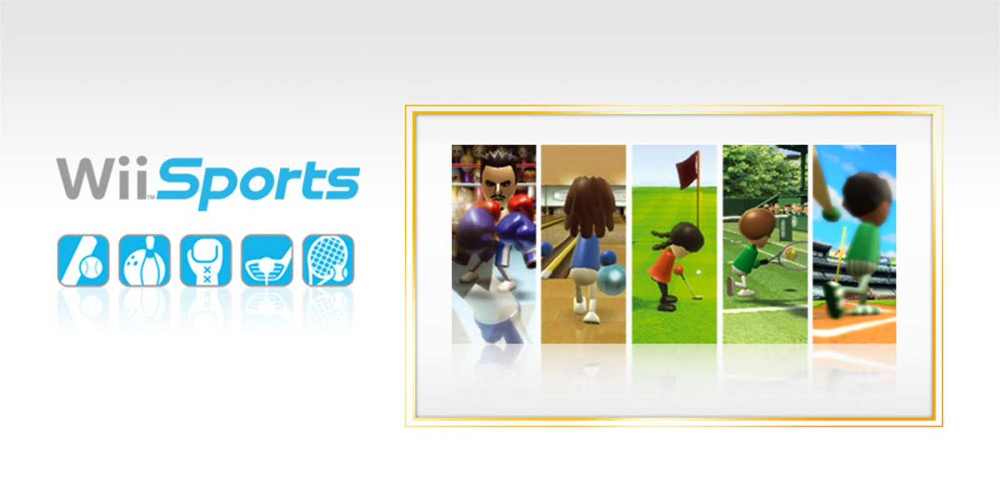
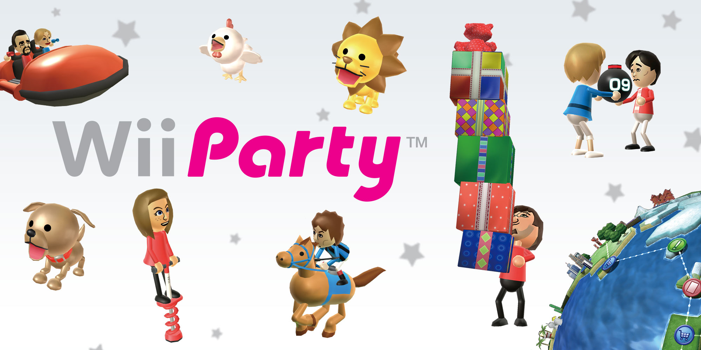
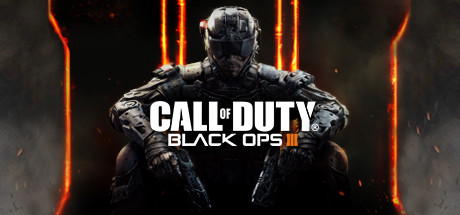
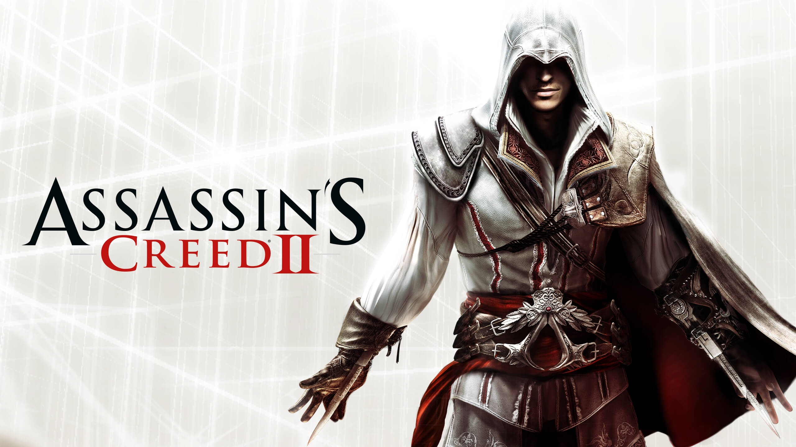
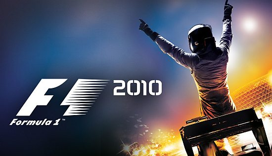
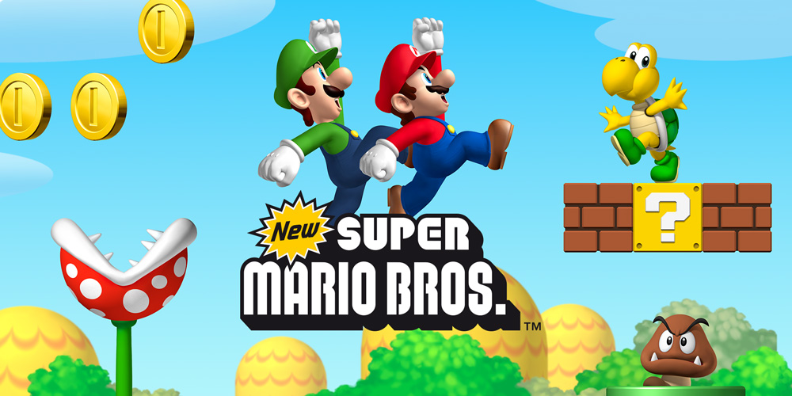

JOC-001
9/10
GTA Vice City
Gènere: acció i aventura
PC
PS4
PS5
- Preu: 60€
- Estoc: 100
- Data sortida: 29/10/2002
Videojoc d’acció i aventura en món obert desenvolupat per Rockstar North.

JOC-002
8/10
Wolfestein: The New Order
Gènere: Shooter
PC
PS3
PS4
XBOX
- Preu: 20€
- Estoc: 50
- Data sortida: 20/05/2014
Shooter d’acció en uns anys 60 alternatius on els nazis van guanyar la Segona Guerra Mundial. Controls en Blazkowicz per liderar la resistència i destruir el seu imperi tecnològic.

JOC-003
10/10
WII Sports
Gènere: Esportiu
WII
- Preu: 10€
- Estoc: 25
- Data sortida: 19/11/2006
Videojoc de gènere esportiu més venut de la història de Nintendo, convertit en tot un clàssic de la consola Wii.

JOC-004
10/10
WII Party
Gènere: Familiar
WII
- Preu: 15€
- Estoc: 25
- Data sortida: 08/07/2010
Reuneix la família i els amics perquè la festa de l’any es juga a la teva sala d’estar. Amb Wii Party, els teus propis Miis es converteixen en els protagonistes de més de 80 minijocs bojos.

JOC-005
10/10
Call of Duty: Black Ops III
Gènere: Shooter
PC
PS3
XBOX
- Preu: 30€
- Estoc: 20
- Data sortida: 06/11/2015
Situat en un futur distòpic l’any 2065, el joc submergeix els jugadors en un món on la ciència i la tecnologia han canviat completament la naturalesa de la guerra.

JOC-006
8/10
Assassin's Creed II
Gènere: Acció i Aventura
PC
PS4
XBOX
- Preu: 35€
- Estoc: 50
- Data sortida: 19/11/2009
Ambientat en ple Renaixement italià, el joc segueix la història d’Ezio Auditore da Firenze, un jove noble que es converteix en un mestre assassí.

JOC-007
8/10
F1 2010
Gènere: Conducció
PC
PS4
XBOX360
- Preu: 15€
- Estoc: 10
- Data sortida: 24/09/2010
Simulador de velocitat definitiu per reviure una de les èpoques daurades de la Fórmula 1.

JOC-008
8/10
New Super Mario Bros
Gènere: plataformes en 2.5D
WII U
- Preu: 25€
- Estoc: 15
- Data sortida: 30/11/2012
Aquest títol va mantenir l’essència clàssica de scroll lateral en dues dimensions però adaptada a l’alta definició. Mario i la seva família han de recuperar la llar de la princesa Peach.